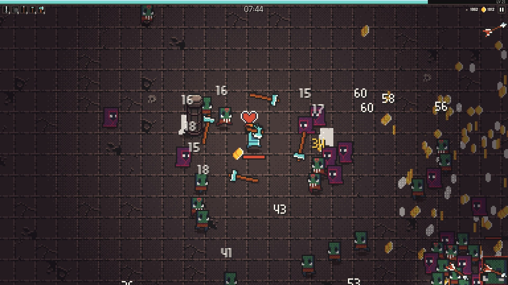
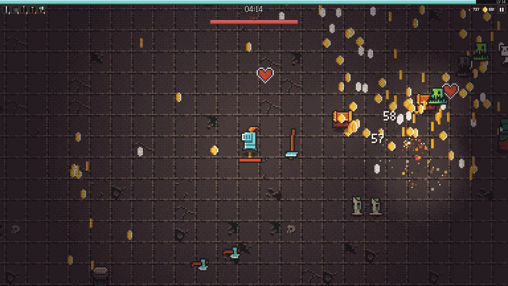

See it mowing
How it plays
Move. That's it.
Swords swing, knives fly and bombs go off on their own. Your job is to weave through the horde, dash out of trouble and stay alive.
Grow every minute
Level up to pick from 11 weapons and 11 upgrades, then evolve each weapon into a stronger form. Shrines offer blessings, and a kill streak sets off a frenzy.
Clear the dungeon
Five dungeons, each with its own bosses and tricks. Spend coins on permanent upgrades, unlock 10 heroes, finish quests and push the Torment level higher.
Screenshots



Install as an app
- Android (Chrome): tap “Install app” above, or the browser menu → “Install app”.
- iPhone / iPad (Safari): Share → “Add to Home Screen”.
- PC (Chrome or Edge): press “Install app” above, or the install icon in the address bar.
The installed app opens full screen, keeps your save on the device and plays without a connection.
Controls
- PC
- WASD or arrow keys to move, Space to dash. P or Esc to pause.
- Phone
- Drag anywhere on the screen to move, tap » to dash.
- Attacks
- Automatic.